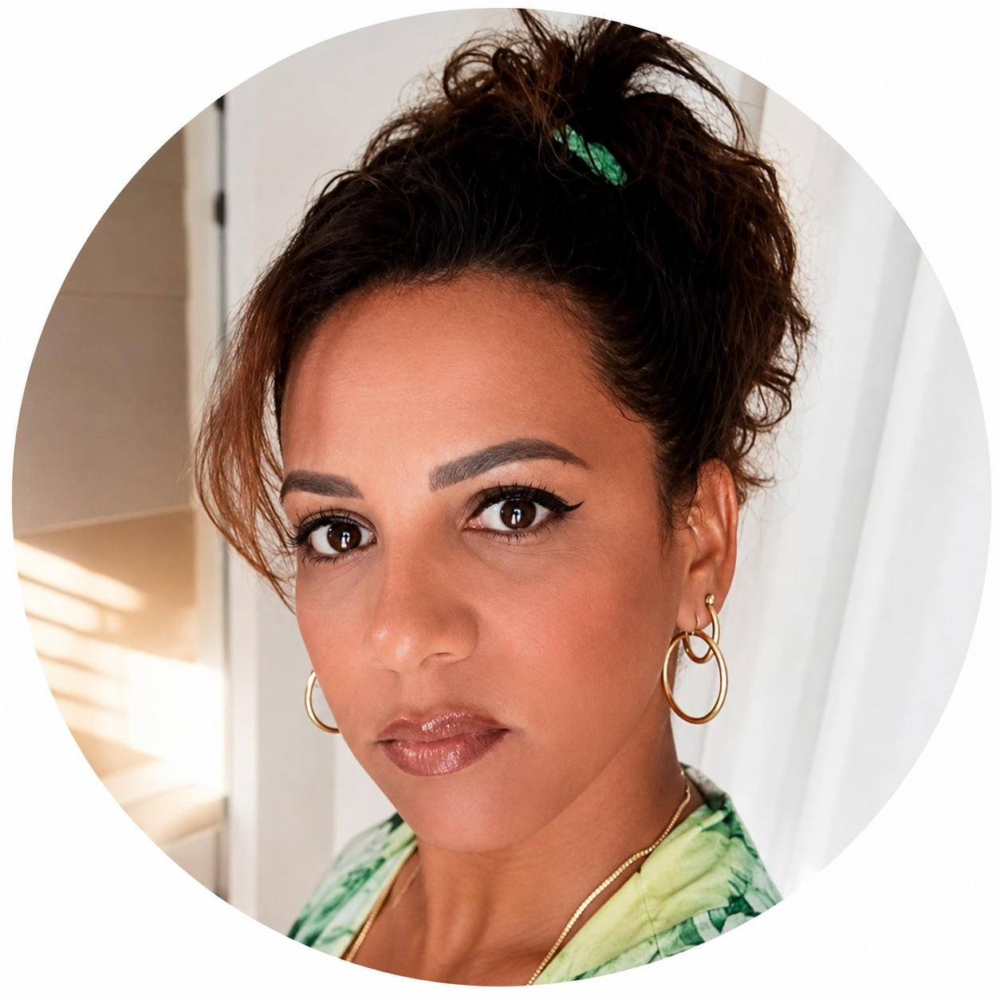

Soy odontóloga con más de 10 años de experiencia en estética dental, implantología y ortodoncia. Pero más que mi título, lo que me define es mi forma de trabajar: sin prisas, con total transparencia y poniendo tu bienestar por encima de todo.
Decidí abrir mi propia clínica para ofrecer un trato humano y cercano, donde cada paciente tenga todo mi tiempo y dedicación. Aquí no hay turnos apresurados ni tratamientos estandarizados: diseño tu plan a tu medida, explicándote cada opción hasta que te sientas seguro/a.
Mi formación incluye certificación en Ortodoncia Invisible y un Máster en Implantología Avanzada. Pero lo que más me enorgullece es ver cómo mis pacientes recuperan la confianza para sonreír.
— Dra. Yisel

Soluciones integrales para tu salud bucal
Carillas, blanqueamiento y armonización facial. Mi especialidad favorita porque veo el cambio en tu mirada.
Recupera tu sonrisa con implantes de máxima calidad. Yo misma realizo todo el proceso.
Alineadores transparentes. Corrige tu sonrisa sin brackets y con total comodidad.
Revisiones, limpiezas y tratamientos de conducto. Tu salud bucal al día con el mejor cuidado.
Sonrisas reales, resultados reales
"La Dra. Yisel es increíble. Me explicó todo con dibujos y ejemplos hasta que entendí cada paso. Nunca había sentido tanta confianza en un dentista."
"Tuve un accidente y perdí un diente. Ella me atendió el mismo día, me calmó y en 2 meses ya tenía mi implante. Parece magia."
"Llevo a mi hija de 7 años y a mi mamá de 72. Las trata con la misma paciencia y cariño. Es toda una profesional."
Resuelvo tus dudas antes de la cita
Sí, al 100%. Yo realizo todas las consultas, diagnósticos y tratamientos. No hay asistentes ni otros odontólogos que te atiendan sin mi supervisión. Mi nombre es mi garantía.
No soy la opción más barata, pero sí la que te ofrece calidad garantizada y materiales de primera. Prefiero hacer un excelente trabajo a hacer muchos trabajos rápidos. Ofrezco financiamiento sin intereses para tratamientos largos.
Entre 45 minutos y 1 hora. No tengo prisas. Necesito conocerte, revisarte bien y resolver todas tus dudas. Tu tiempo es valioso y el mío también, por eso lo aprovechamos al máximo.
Es normal. Yo trabajo con sedación consciente (gas y óxido nitroso) para que estés relajada/o durante el tratamiento. También te explico cada sonido y cada herramienta antes de usarla. El miedo se va cuando entiendes lo que pasa.
Encuéntranos fácilmente. ¡Te esperamos con una sonrisa!
Estoy aquí para cuidar tu sonrisa
Puedes escribirme o llamarme directamente. Yo misma respondo todos los mensajes.
Si tienes dolor intenso, sangrado o fractura, no esperes. Atiendo urgencias el mismo día, incluso en fines de semana.
📞 Llámame ya: (022) 123 4567
Llamar ahora